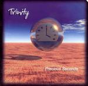

| Artist: | Tr3nity |
| Title: | Precious Seconds |
| Label: | Cyclops CYCL 138 |
| Length(s): | 67 minutes |
| Year(s) of release: | 2004 |
| Month of review: | [10/2004] |
| 1) | Livin' A Lie | 13.52 |
| 2) | Run Before You Walk | 11.31 |
| 3) | From Afar | 10.02 |
| 4) | More Than I Deserve | 11.58 |
| 5) | The Last Great Climb | 20.13 |
The album opens with lingering guitars, sounding like an instrumental track of the romantic brand, to the point of bordering on being yucky (or crossing that, depending on your tastes). Through an almost new age intersection slowly picking up on melody we move into the business end of the Lie. After the guitar lead in, this transition takes another couple of minutes to return to the guitar based start. All and all we're seven minutes into the track before the vocals set in. This business end is quite worthwhile. The vocals are not particularly brilliant, but their set down firmly and create the atmosphere for the other instruments to fall in, which especially the guitar does well now. No longer the slowed down guitar meister stuff, but melody working well with the rhythm instruments and the vocals. Towards the end we get a short jazzy intermezzo, but thankfully this doesn't lead us from the theme for too long. A track with a strong theme building up well, but less than half of it focusses on the theme.
Run before you walk opens with a Styx alike piano vocal opening. This Styx semblance is musical, but helped handsomely by Campbell's voice, which is highly remeniscent of Dennis DeYoung's. The instrumental breakthrough that follows is more pop oriented than it is progressive: the light feel of the opening remains. The mid section features a lot of sparkling piano, overlaid at times with guitar, rhythm or humming. From this we return to the track's vocal theme, from that to finally start building towards more excitement. Even though the first half of the song has some nice bits of the piano theme, once again we're past the seven minutes mark before it really ignites, and once again this ignition is a highly convincing one.
From Afar opens somewhere between Genesis and Gentle Giant, except that the acoustic instruments have been replaced with samples. Campbell's voice suddenly is insecure, even off key at times. Fortunately the driven guitar falls in a lot sooner in this track, immediately taking it to another level with a once again beautifully lingering pushing melody. Somewhere along Genesis appears to be quoted. Despite its weak vocal start, the added value of an early melodic start of the track makes it the best so far.
More Than I Deserve opens once again piano vocal. This time the melody is picked up (after some three minutes) by the piano, sounding just as haunting as the guitar themes of the tracks before. This balance between theme and instruments hangs on until a couple of minutes before the end, whence we move to another vocal section dominated by choppy drumming and very poppy stuff. A somewhat sorry end to a track with such a strong main section.
Despite the lengths of the previous tracks, The Last Great Climb is the first to actually have the sort of build up you'd expect from an epic. Campell's voice carries the track. The rhythm and guitar are merely for accompaniement now, creating a whole that could do with some added strength. As the track gains momentum the vocal dominance slacks off a little, but it remains present. The theme presented is built up over a long period. A positive surprise is that despite this The Climb does not contain any slack sections and is carried wonderfully by this theme.
This could have been a very good 55 minute album. Now it's turned out a 67 minute album with a lot of great and wonderful moments, but with a little too much filling to fully commit the listener at all time. Despite this the end result is still an album with a lot of great sections, which can easily compete with for instance a Salem Hill. By the point the album is over the slack moments of the first two tracks are more or less forgotten for all the melody that has come after that.